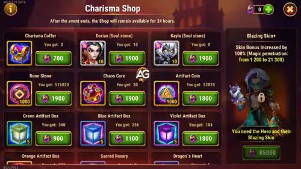

The Blazing Skin+ event is centered on Dorian, Hero Wars Alliance's iconic Blood Mage and Healer. It works as a two-step unlock: first you need to acquire the base Blazing skin, and only then the Skin+ upgrade becomes available in his Perfection Shop. Dorian received a significant rework that made him stronger overall — he now sacrifices his own health to heal allies and increase their maximum health, making his survivability and team support even more relevant than before.
Dorian's Blazing Skin+ grants +21,300 Magic Penetration — one of the highest single-skin Magic Penetration bonuses in the game. Magic Penetration reduces the enemy's effective Magic Defense when Dorian's skills hit, making his Wings of Night damage land harder and, more importantly, ensuring his Fountain of Blood and healing output remain efficient even against tanks with high Magic Defense. This is a pure offensive and healing-efficiency upgrade.

Magic Penetration is an offensive stat that reduces the effective Magic Defense of enemies when Dorian's magic-based skills hit them. In practical terms, a higher Magic Penetration means his abilities deal more damage and his healing through Wings of Night (which heals allies for 100% of the damage dealt) becomes more powerful at the same time.
Here is a quick breakdown of how it impacts each of Dorian's skills:
The +21,300 Magic Penetration from the Blazing Skin+ is a very significant number. Combined with Dorian's Talisman of Blood — which can be rerolled for up to +19,800 additional Magic Penetration — players running a dedicated Dorian team can reach very high penetration values, making his healing and support output substantially stronger at every stage of a battle.
I want to be completely sincere here, because I think you deserve a straight answer.
If Dorian is not your main hero, I honestly believe it is acceptable to skip the Blazing Skin+ — especially for low spenders and free-to-play players. Dorian's power comes primarily from his Vampirism mechanic. Even after his rework, which made him considerably stronger, he remains a hero that continues to be useful even at lower power levels. His Blood Seal passive — which increases allies' Vampirism and persists even after his death — means he contributes to your team throughout the entire battle, not just while he is alive.
If your main goal is strategic battles, you can keep Dorian at a lower power level compared to your other key heroes and he will still do his job. The Skin+ is not mandatory for him to function well in a support role.
⚠️ Important — When the Blazing Skin+ IS worth it:
If you are building a dedicated Dorian team where he is the centerpiece of your lineup, the Blazing Skin+ becomes very important. A Dorian-focused team built around his full kit — Vampirism, resurrection through Call of Blood, and Wings of Night healing — benefits enormously from the +21,300 Magic Penetration boost. Combined with the Talisman of Blood and the right artifacts, the difference in healing output and damage contribution is substantial.
The Blazing Skin+ paired with the Talisman of Blood (which offers up to +19,800 Magic Penetration from rerolls) creates one of the highest possible Magic Penetration values for any hero in the game. If Dorian is your investment hero, do not pass on this event.
The process has two mandatory steps — skipping either one means you cannot purchase the Skin+ at all. Here is how it works:
After the event ends, the only reliable path to a Skin+ is through the Heroic Chest. Here is the honest reality of that grind:
The best time to get any hero's Skin+ is always during their dedicated Skin+ event. Waiting means committing to months of uncertainty for a random reward that may not even be the hero you want.
The Blazing event features discounts on Outland Chests — one of the most efficient ways to stock up on skin stones while earning Charisma Coins at the same time. Skin stones are one of the hardest resources to keep up with in Hero Wars Alliance given the constant stream of new releases.
To take advantage of those discounts, you need emeralds. During this event, there are x4 emerald purchase offers, meaning you get four times the normal amount for the same price — one of the best emerald deals in the game.
💡 Quick note:
The best place to purchase those discounted emeralds is through the official Hero Wars Hub store. When you buy through the Hub, you get:
If you plan to take advantage of the event through the official Hero Wars Hub store, remember to use the code ALEXANDREGAMES at checkout. This does not cost you anything extra and helps me keep the blog running. Thank you!
Once you have secured the Skin+ (or if the base skin was out of reach and you have leftover Charisma Coins), here is the best priority order for the remaining items in Dorian's Perfection Shop:
As with all soul stone purchases: aim for at least 4 stars on any hero before switching to the Evolution Booster (book of evolution) to finish the star progression efficiently. You need a minimum of level 50 and 4 evolution stars to activate a hero's Legendary Relic — a major progression milestone. To upgrade Legendary Relics beyond level 9, the hero must be at 6 stars or Absolute Star, so plan accordingly.
Dorian is a Back Line Healer whose primary stats are Intelligence (scaling Magic Attack and therefore all healing output) and Health (survivability). His Wings of Night heals allies for 100% of the magic damage dealt, which means skins that boost Magic Attack directly amplify both damage and healing at the same time. Below is a summarized priority table. For detailed breakdowns of each skin's impact, visit the full Dorian Character Guide.
| Skin | Stat | Value | Priority |
|---|---|---|---|
| Champion Skin | Magic Attack | +10,687 | Very High |
| Romantic Skin | Health | +106,645 | Very High |
| Winter Skin | Magic Defense | +10,687 | High |
| Masquerade Skin | Armor | +10,650 | High |
| Blazing Skin+ | Magic Penetration | +21,300 | High (Dorian teams) |
| Default Skin | Intelligence | +1,365 (+4,095 Mag. Atk.) | Medium |
The Champion and Romantic skins should be your first priorities — Champion boosts Magic Attack which directly scales Dorian's healing and damage, while Romantic's large Health bonus keeps him alive longer in the backline. The Winter and Masquerade skins provide solid defensive stats that improve survivability. The Blazing Skin+'s +21,300 Magic Penetration is the highest priority during this specific event, especially for dedicated Dorian team builds where it synergizes with the Talisman of Blood's reroll bonus.
Did you like our Dorian Blazing Skin+ Event Guide? Is there something you didn't understand or would like to suggest changes to? We invite you to join our comment section on the Alexandre Games Blog page. Feel free to express your opinion, clarify your doubts, and share your suggestions.
Click the button below to get started: